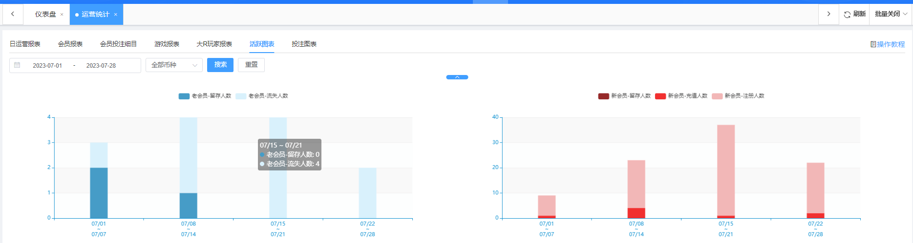
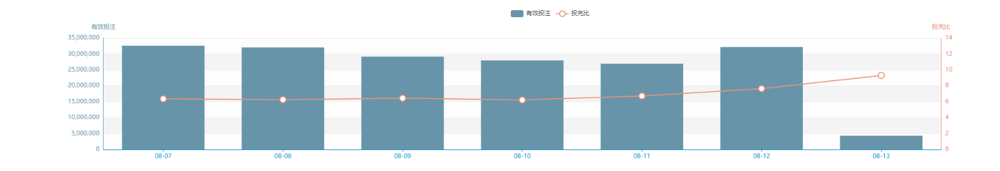

一、日运营报表
（1）功能说明：可自由选择查看某一时间段的运营数据，往右拉可看到自定字段按钮，按下后可以自行调整展示字段。又，当数据为蓝字时可点击跳转，为黑字时无法跳转。
（2）账号余额：所有账号余额的总和，即各会员于大厅之馀额。（不含会员在三方游戏之余额）
（3）利息宝：各会员的余额宝本金余额总和（不包含利息）
（4）新增有效代理：即当日新增的代理
（5）注册：当日新增的注册
（6）首充：当日首次充值的人数（任意金额）
（7）大R玩家：根据【会员管理】 - 【大R设置】 - 【大R玩家】的配置进行统计，当日满足条件后计算1，每日0点重新计算
（8）充提：充值总额/提现总额/充提差额 点击跳转【财务管理】 - 【帐变记录】
（9）有效投注：当日所有会员的有效投注的汇总。
（10）损益：即当日公司盈利（绿为盈利，红为亏损）
（11）佣金：即当日派发的全部佣金
（12）优惠金额：当日（所有活动）+（任务）+（返水）+（VIP奖励）+（充值优惠）+（利息宝利息）+（公积金）+（盲盒奖励）的支出总额。
（13）余额账变总计：该日账变总和，账变即站点内全会员大厅余额进出。
（14）人工修正：该日账变中，人工修正项之总和。
（15）利息宝转出入：该日利息宝明细中，转入与转出之和(不含领取利息)。
（16）充值总额: 于财务管理/全部充值页面，成功时间为该日 0 点-24点，且支付成功，且符合会员币种之全部充值单之金额总和。
（17）提现总额: 于财务管理/提现管理页面，操作时间为该日 0 点-24点，且状态为已付款或已强制出款，且符合会员币种之提现金额总和。
（18）三方余额与未结算投注： 三方余额是各日24时，尚未回大厅、停留在三方游戏商之金额；未结算投注指的是在该日或之前的注单，在该日仍未结算投注指的是在该日或之前的注单，在该日仍未结算 (未出输赢结果)之金额总和。其中，因拉单补单时间差，将于每天北京时间3pm (UTC+8)更新各站点前一日23.59.59的未结算投注数字。
（19）保证金结算收益： 扣除保证金、强制结算、强制提前结算、提前结算、俱乐部结算、生成iOSAPP、生成Android，保证金结算收益，是指"全部"由业主扣除俱乐部盟主存在站点内的保证金的行为。这个扣掉保证金意味着业主应该退给俱乐部盟主的钱减少了，变成业主收到兜里的收益。
（20）逾期债务： 存量字段。对于现金网(娱乐城)站点指的是借出去且已超过还款期限的总金额，而信用网(俱乐部)站点因为借款没有到期期限，故指的是坏账剩余金额。前者对应的是优惠模块的信用借款，后者对应的是财务模块的借还款管理。
二、会员总报表
（1）搜索说明：可查询某一时间段(某日至某日)的会员或上级代理线下所有会员的报表详情（仅支持精准搜索）
（2）会员账号/上级代理/会员标签：点击查看【会员概览】
（3）充提差额：（充值金额）-（提现金额）=充提差额；公司盈利为红，绿为亏损
（4）佣金：即该会员账号整条线的代理佣金（与上级代理无关），点击跳转【领取记录】，若没有领取为空
（5）优惠金额：（所有活动）+（任务）+（返水）+（VIP奖励）+（充值优惠）+（利息宝利息）+（公积金）+（盲盒奖励）的支出总额；点击＋，可展开查看
（6）会员详情：点击跳转该会员某时间段的报表信息，具体可参考【投注记录】页面。
（7）高级搜索：针对特定游戏平台、多位会员、特定投注或盈亏范围搜索用户。若要排除大多都是0的会员，请在高级搜索中，活跃分数项填写一最低值，因活跃分数 = 充值金额 + 提现金额 + 投注金额 + 输赢 + 优惠金额 + 佣金 + 来自借款 + 成功还款 + 手动加款 + 手动扣除 + 代理转账 + 放弃奖励 + 打赏
三、单个会员报表
该报表为"会员总报表"简化而来，仅支持查询单一会员数据，删除了批量查询筛选项，保留了会员账号、会员ID和游戏类型等筛选项。，并根据业务部门设置不同权限使用该功能。
四、活跃图表
（1）功能说明：旨在观测新老用户对比及其活跃、留存情况，有日活跃图表和周活跃图表。
（2）图例说明：以下图实际案例说明定义，鼠标移至柱上也会有预览。

上图图例 (周活跃图表)中，业主选定 2023/7/1~2023/7/28，共有四根柱子，分别是2023七月的第一二三四周，选定第一根柱子(7/1~7/7)为例。
老会员-流失人数: 06/30 或以前注册者，在 7/1~7/7 充值 > 0者，但在 7/8~7/14 充值 = 0 者。
老会员-留存人数: 06/30 或以前注册者，在 7/1~7/7 充值 > 0者，且在 7/8~7/14 充值 > 0 之会员。
新会员-注册人数: 每一柱为当周注册的会员总数，此例指 7/1~7/7 的注册数。
新会员-充值人数: 每一柱为当周注册的会员中，又有完成首充者的数量。此例指 指 7/1~7/7 的注册且首充者。
新会员-留存人数: 每一柱为当周注册的会员中，且有首充，且在下一周的 充值 > 0 。此例指 指 7/1~7/7 的注册且首充，且于7/8~7/14又有充值>0者。
换言之，以日活跃图表为例时，假使筛选日期 2023/7/1~2023/7/28，共有28根柱子，分别是2023七月的第1,2,3,...,28日，选定第一根柱子(7/1)为例。
老会员-流失人数: 06/30 或以前注册者，在 7/1 充值 > 0者，但在 7/2 充值 = 0 者。
老会员-留存人数: 06/30 或以前注册者，在 7/1 充值 > 0者，且在 7/2 充值 > 0 之会员。
新会员-注册人数: 每一柱为当日注册的会员总数，此例指 7/1 的注册数。
新会员-充值人数: 每一柱为当日注册的会员中，又有完成首充者的数量。此例指 指 7/1 的注册且首充者。
新会员-留存人数: 每一柱为当日注册的会员中，且有首充，且在下一日的 充值 > 0 。此例指 指 7/1 的注册且首充，且于7/2又有充值>0者。
五、投注图表
（1）功能说明：可查询某一时间段的投充比 (= 有效投注 / 充值)与 有效投注

六、未登录会员分析
不同群 (如会员层级、VIP等级、会员状态)的会员，这些会员至今有多少天没有登录了 (或是从未登录)，并可以导出分类名单或全部未登录名单。
七、未充值会员分析
不同群 (如会员层级、VIP等级、会员状态)的会员，这些会员至今有多少天没有充值了 (或是从未充值)，并可以导出分类名单或全部未充值名单。